Deploying web apps to Microsoft Azure.
Due date
Section A: Tuesday, March 20, 2018, 11:59pm
Grade value: 3% of your final course grade
If you wish to submit the lab before the due date and time, you can do that.
Objective(s)
Hands-on learning about the fundamental of cloud computing using MS Azure platform, including creating web server, database server, SQL databases using the Azure Portal and deploying your web apps to the Azure platform.
Assumptions and prerequisites
You have created a Microsoft Account and you have been able to access Microsoft Azure through ordering and setting up “Microsoft Azure for Students” from the webstore Seneca College - Newnham - Microsoft Imagine as instructed in Lecture 7-2.
To verify that you are able to access Microsoft Azure, i.e. you successfully get the subscription using the “Microsoft Azure for Students” ordered from the webstore, login to the Microsoft Azure management portal, using your Microsoft Account (Seneca email) credentials:
Click the “All services >” item from the menu at left-bottom area, then click Subscription. It should show a subscription from Microsoft Imagine with the status “Active”, indicating you have successfully obtained a subscription for accessing Microsoft Azure.
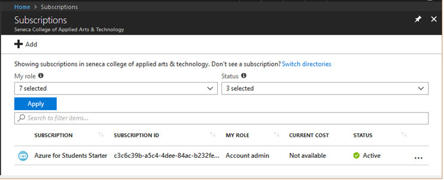
If no “Active” subscription found, please complete the steps on Lecture 7-2 (Getting started with Microsoft Azure Services).
Microsoft Azure services, and planning to use them
For this course, we will use Microsoft Azure web apps and sql databases.
Database Server
The database server name should be named in a similar way to your Microsoft Account login name. For example:
wsong-ds2017a7
(Note: the first part is you MySeneca Learn ID, and “ds” means database server)
During the creation of the database server, you must create or define credentials. This is a normal task, and similar to your past experience with database servers. We suggest (and recommend) that you use the similar login name and same password as your Microsoft Account.
SQL Databases
A database server can hold one or more sql databases, and each sql database name will be customized for the assignment. For Assignment 7, the sql database name will be:
Assign7Store
Web Apps
For this course, you will use 3 or 4 web apps for your Assignments. The recommended web app names will be a composite of part of your MySeneca Learn ID name, and the assignment name.
For example, if your you want to create a web app (“wa”) for Assignment 7 (“a7”), then use this web app name:
wsong-wa2017a7.azurewebsites.net
(Note: the first part must be you MySeneca Learn ID or the first part of your Seneca Email)
In the next section, you will implement these plans.
Click + Create a resource on your Azure page, then type “SQL” in the search box on the Home>New panel. From the datalist of the search box, select SQL server (logical server):
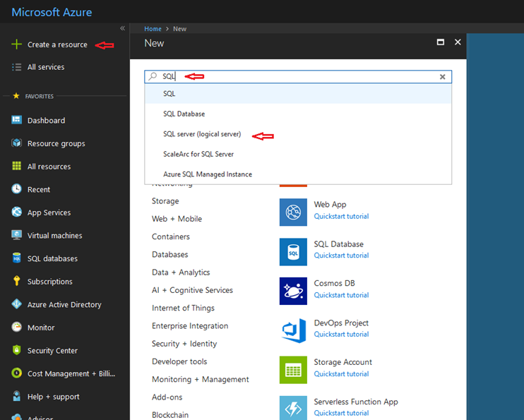
In the Home > New > SQL server (logical server) panel, click the Create button at bottom:
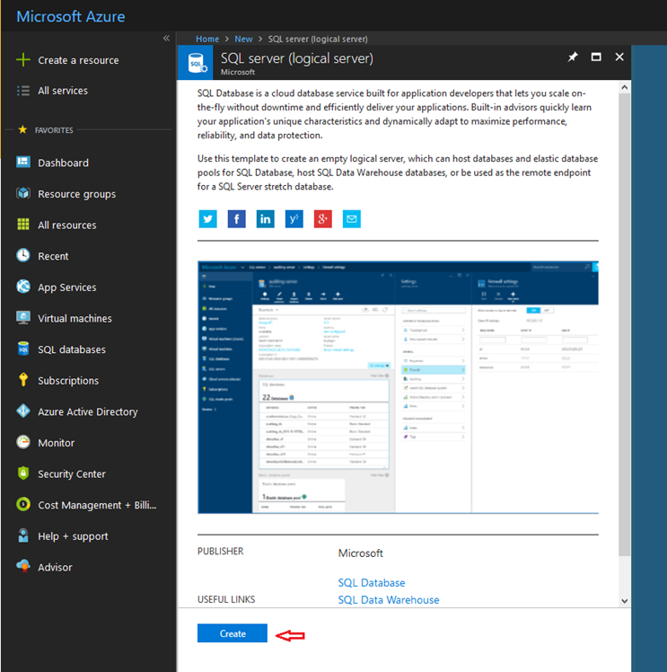
Click the Create button to continue.
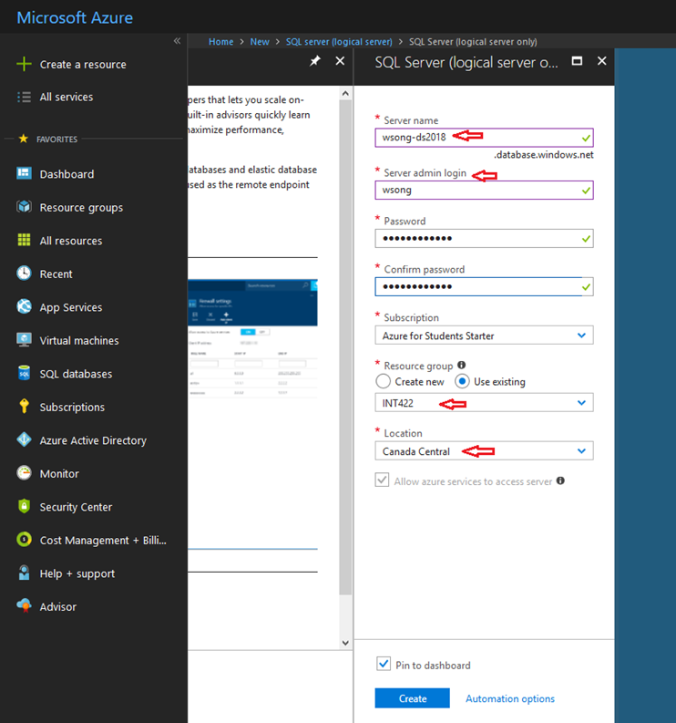
As noted above, the database server name can be the same as what you have planned above. For example: wsong-ds2017
You can give your own “Server admin login”, e.g. wsong and password.
Note: please write down the user name and password for the database server’s admin account. Later on you’ll use them for setting up the connection to the database.
We suggest that you select “Canada Central” for the location. In a later step, it appears that the portal creates web apps in that location, and you should have the same location for your web app and database server. However, due to the limitation of free Azure accounts, you may have to choose a different location when you create the 2nd, 3rd, … web app or database server. (new)
For the “Resource group” setting, create a new resource group; we suggest naming it “INT422” (or “BTI420” if you are in the BTI420 class).
Click the Create button, then wait for a while the wsong-ds2018 is created:
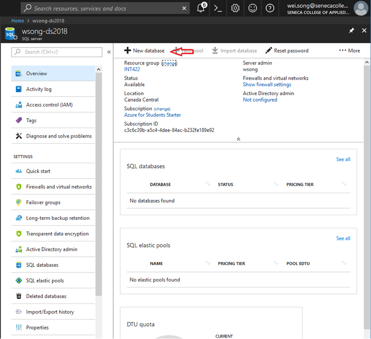
The “SQL Database” configuration panel appears (below). Enter the database name:
Assign7Store
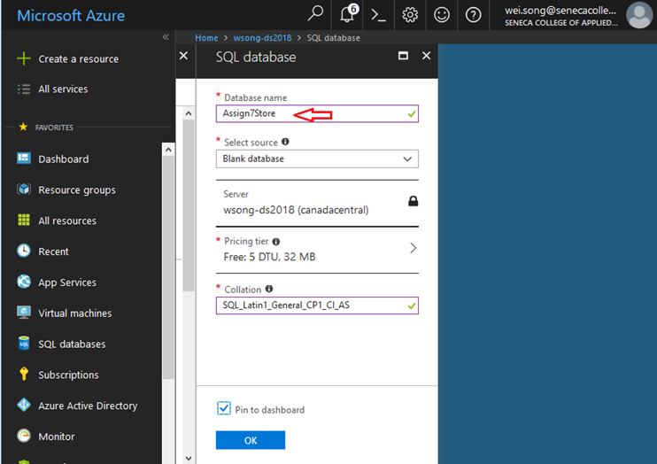
Database Assign7Store was created:
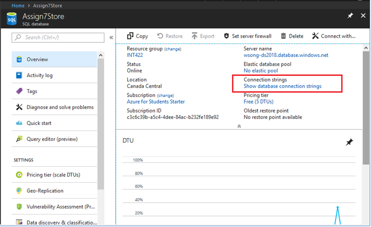
Click the “All resource” item from the menu at left-side, it shows that a SQL server and database have been created. Right click them and pin them to dashboard.
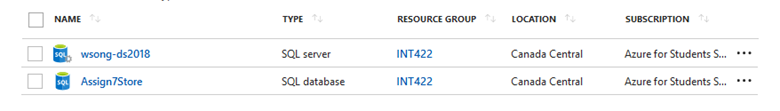
The following procedure will enable you to create the web app for your Assignment 7 work.
In the Azure portal, choose + Create a resource > Web + Mobile, and then “Web App”.
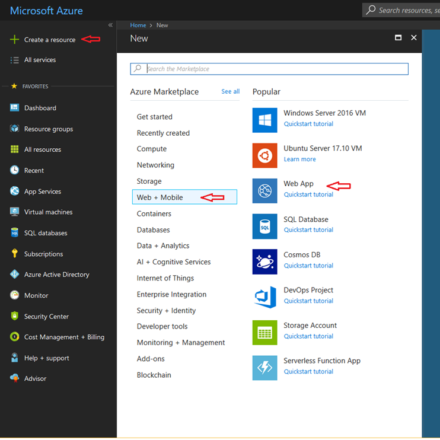
The “Web App” configuration panel appears. Enter the app name (which will be the host name), suggested earlier:
wsong-wa2017a7.azurewebsites.net
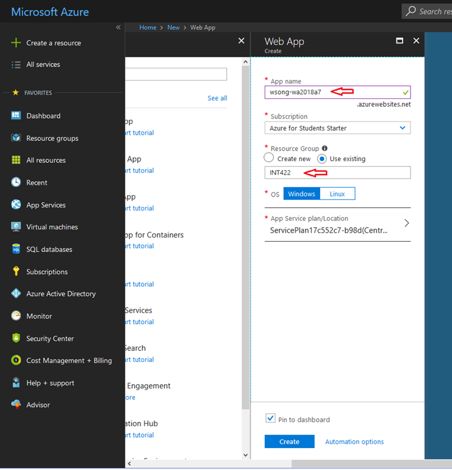
For the “Resource group” setting, Select Using existing and them INT422.
For the “App Service plan/Location” setting, Click on it, and then click Create New in the App Service plan panel.
In the App Service plan panel, give a name for App Service plan, and select Canada Central for the Location setting. Click the OK button
The other settings are good as they are.
Then click Create button when ready.
Click the “All resource” item from the menu at left-side, you should have:
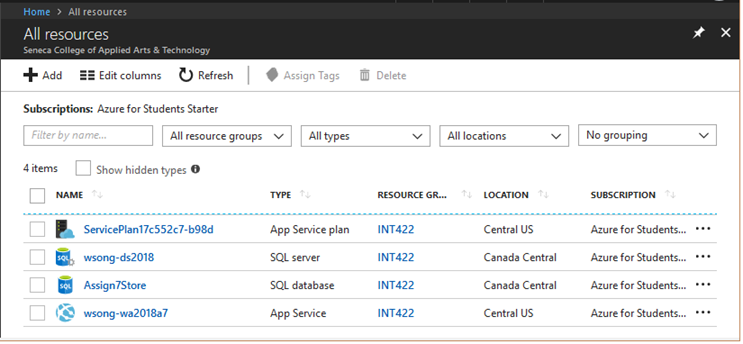
Publish (deploy) your web app and sql database to Azure
Before you leave the Azure portal, you will need a database “connection string”.
On the Azure dashboard (desktop), select your sql database item (e.g. Assign7Store). A setting panel opens.
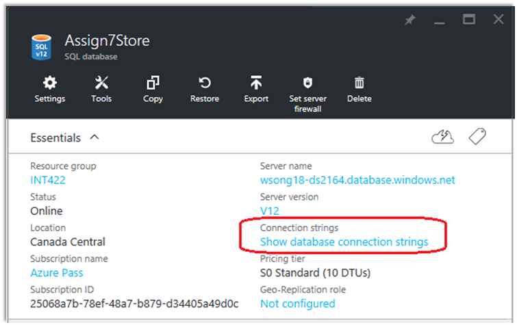
Click on Show database connection strings, you will see the ADO.NET string.
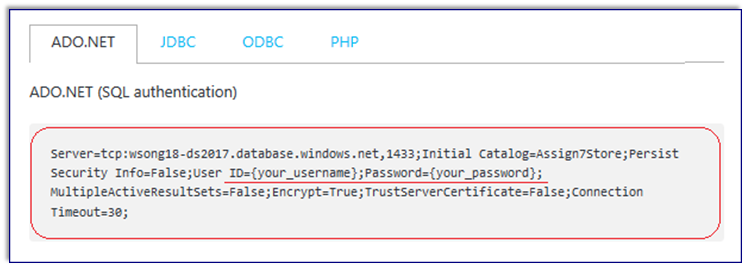
Later on, you will paste it into the Visual Studio “Publish” dialog, and change
…=False;User ID={your_username};Password={your_password};MultipleActiveR…
i.e. ADO.NET string’s “{your_username}” and “{your_password}” parts, including the curly brackets “{}”,
to your own database “Server admin login” id and its password. (which you set in the steps of page 5)
e.g. …=False;User ID=wsong@wsong-ds2017;Password=Password123!;MultipleActi…
Creating an ASP.NET MVC web app with security
Open your Visual Studio instance, and create a new web app project named Assignment 7, with security:
File > New > Project. Select the standard “ASP.NET Web Application”.
On the next dialog, choose the “Individual User Accounts” authentication scheme.
After creating the web app, customize the home page. Change the “Learn more >>” button to “Assignment 7 on Azure” and set the button link to the URL of your assignment 7 on Azure,
e.g. http://wsong-wa2017a7.azurewebsites.net
Run the web app locally, then it will generate database, which will be deploy to Azure with the web app.
Enable (Code first) migrations in you project: open the Package Manager Console in Visual Studio, and type the following commands:
PM> enable-migrations
PM> add-migration initial
PM> update-database
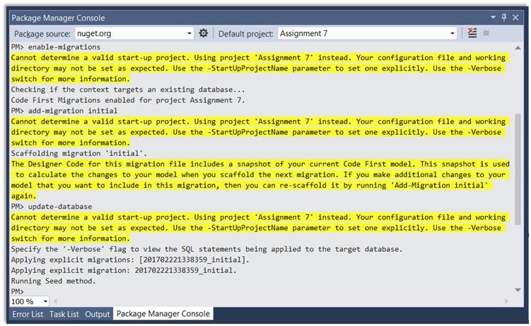
Deploy the web app to Azure Platform
Make sure that the web app builds/compiles without error.
And runs locally, successfully.
And has been configured with the Migrations feature.
In Solution Explorer, right-click your project item, and choose Publish.
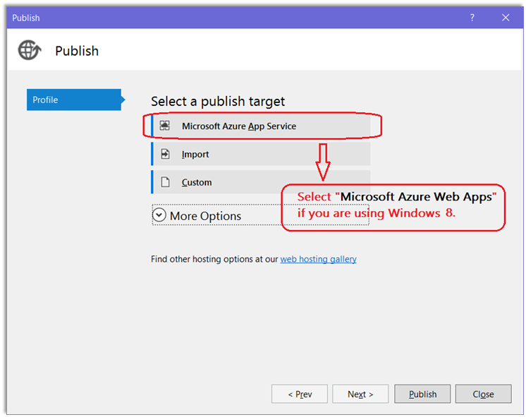
In the Profile settings, choose “Microsoft Azure App Service” as the publish target. A dialog appears. You may have to sign in with your Microsoft Account and provide credentials for Azure, and select a subscription.
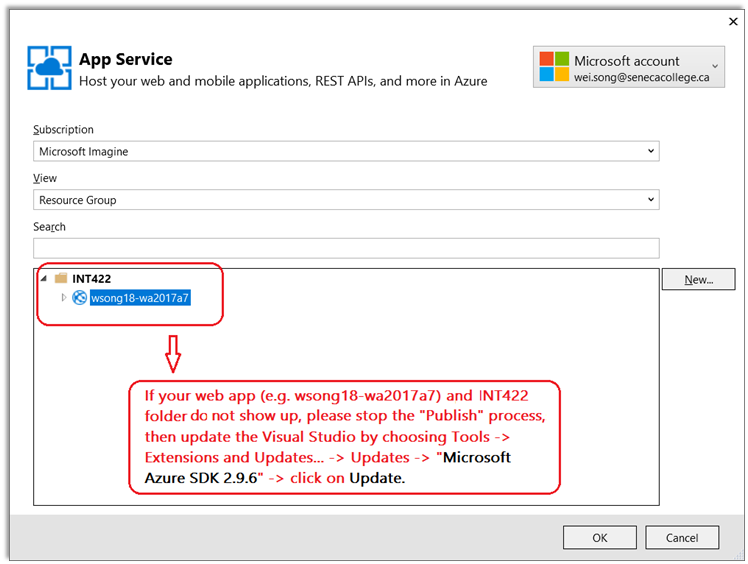
On the next panel – Connection – click the Validate Connection button, to ensure that the settings are correct.
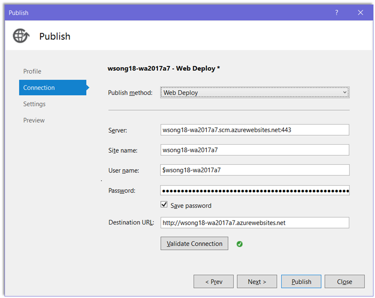
Click the Next button.
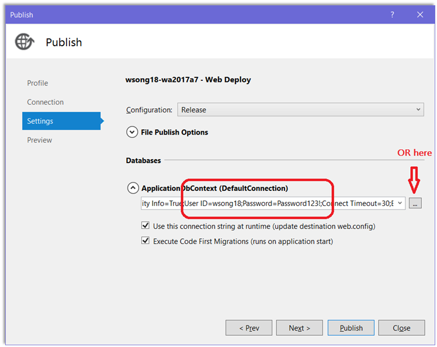
Select (check) the checkbox, “Execute Code First Migrations…”.
Also, this panel – Settings – needs some work.
Paste the connection string that you copied above (from the Azure portal). Then, replace…
…=False;User ID={your_username};Password={your_password};MultipleActiveR…
i.e. ADO.NET connection string’s “{your_username}” and “{your_password}” parts, including the curly brackets “{}”,
…with your own database “Server admin login” id and password.
e.g. …=False;User ID=wsong@wsong-ds2017;Password=Password123!;MultipleActi…
OR, click on the “…” button at right to set the login id and password
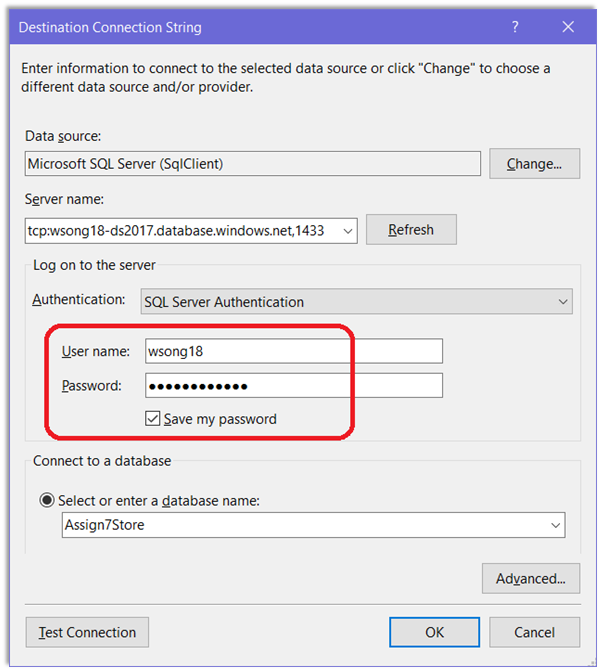
You can click the “test” button to test the database connection (you may need to set up database server firewall with you PC’s IP address). Please note that this step (“Test Connection”) is not necessary, but you must ensure that the entered User name (admin) and password are correct.
Click OK then Next.
On this panel – Preview – you get an opportunity to preview the actions that will happen. It is always a good idea to do this.
Click “Start Preview” button in the center, then:
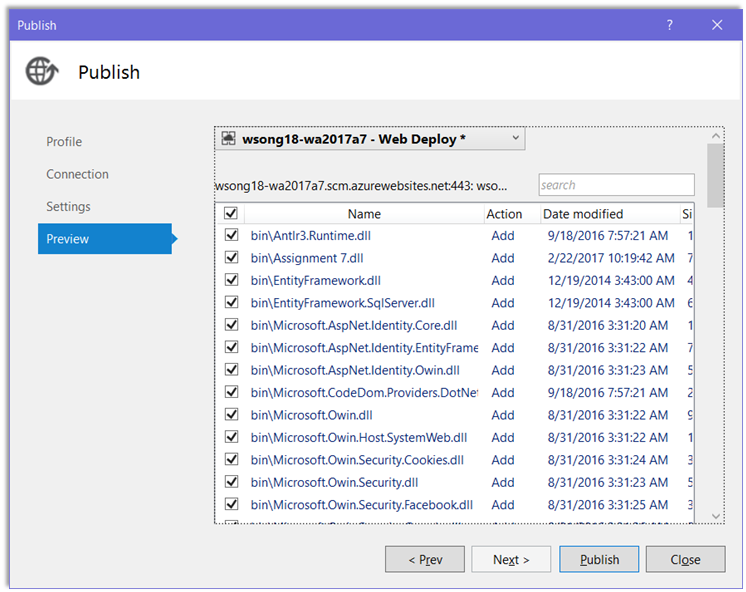
If the list of files to be added or updated makes sense, then click the Publish button. Visual Studio will copy the web app and sql database definition to Azure.
Then, it will open the web app on Azure in a browser.
Please note that this publish task will NOT copy data from your local computer’s database, to the Azure database. Therefore, in your future assignments, you need to initial and/or load data to servers after the first time that the projects are deployed.
Testing your work
Test the pages of your assignment 7 on Azure to see if the web app is successfully deployed. In addition, you should try to register user and/or log in the web app, to check whether the database server works.
The “Learn more >>” button on the project home page must customized to link to your “Assignment 7 on Azure”, so your assignment 7 on Azure can be tested and marked.
Reminder about academic honesty
You must comply with the College’s academic honesty policy. Although you may interact and collaborate with others, you must submit your own work.
Submitting your work
Here’s how to submit your work, before the due date and time:
1. Locate the folder that holds your solution files. In Solution Explorer, right-click the “Solution” item, and choose “Open Folder in File Explorer”. It has three (or more) items: a Visual Studio Solution file, a folder that has your project’s source code, and a “packages” folder. Go UP one level.
2. Make a copy of the folder. This is the version that you will be uploading.
3. Remove the “packages” folder from the copied folder; also, remove the “bin” and “obj” folders.
4. Compress/zip the copied folder.
5. Login to My.Seneca/Blackboard. Open the Web Programming on Windows course area. Click the “Assignments” link on the left-side navigator. Follow the link for this lab. Submit/upload your zip file. The page will accept three submissions, so if you upload, then decide to fix something and upload again, you can do so.